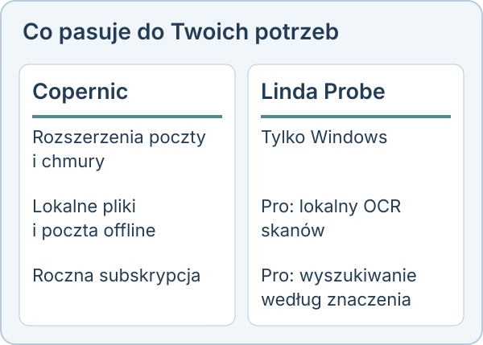

Linda Probe czy Copernic Desktop Search
Copernic i Probe przeszukują dokumenty. Wybór zależy od potrzebnych źródeł i sposobu płatności. Porównanie opiera się na publicznej stronie konkurenta według stanu na 30 października 2026 roku.
Wybierz Copernic Desktop Search, jeśli
Potrzebujesz poczty i źródeł chmurowych obok plików na komputerze. Copernic wymienia rozszerzenia dla Outlooka, Thunderbirda i chmur. Opis produktu mówi też o wyszukiwaniu lokalnych plików i poczty offline. Sprawdź, który pakiet obejmuje Twoje źródła.
Wybierz Linda Probe, jeśli
Chcesz szukać plików na Windows i zapłacić jednorazowo za Pro w licencji Personal lub Team. Probe Pro oferuje lokalny OCR, wyszukiwanie według znaczenia oraz zdjęć po opisie lub wzorze. Copernic też wymienia OCR i wyszukiwanie semantyczne. Nie są to funkcje dostępne wyłącznie w Probe.

Czego nie ma w Linda Probe
Kod jest zamknięty, a program działa tylko na Windows 10 i 11. Wersja bezpłatna obejmuje tylko nazwy i dokładne słowa, a OCR i wyszukiwanie po znaczeniu wymagają płatnego klucza. Instalator nie ma jeszcze podpisu cyfrowego, więc Windows SmartScreen może wyświetlić ostrzeżenie. W przypadku słabych skanów i pisma odręcznego OCR popełnia błędy.

Cena
Linda Probe Free jest przeznaczony do osobistego, niekomercyjnego użytku. Probe Pro kosztuje 10 USD jednorazowo dla jednej osoby, 30 USD jednorazowo dla maksymalnie 10 osób lub 500 USD rocznie dla organizacji. Dla Personal i Team można poprosić o pełny zwrot w ciągu 14 dni.
Copernic oferuje roczne subskrypcje. Aktualną kwotę sprawdź na ich stronie z cenami: nie potwierdziliśmy końcowej ceny przy zakupie.
Nie potwierdziliśmy, czy wyszukiwanie semantyczne Copernic działa w całości lokalnie. Strona cenowa wskazuje Google Gemini i OpenAI przy funkcjach AI.
Oficjalne źródła tego porównania: Copernic Desktop Search · Copernic pricing.